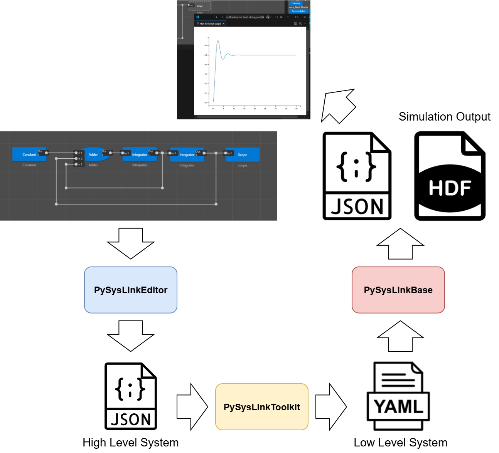
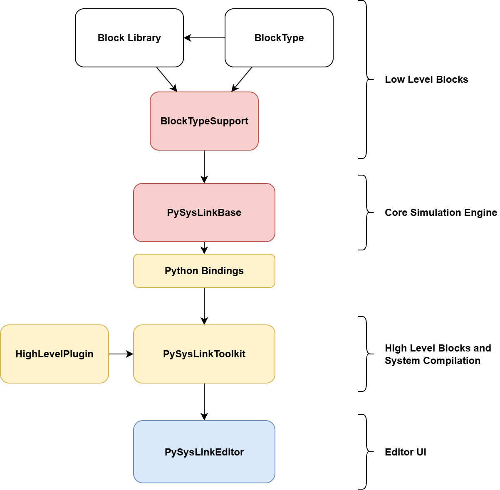

PySysLink – Open Source Block-Based Simulation Framework
PySysLink is a modular, open source simulation framework inspired by tools like Simulink. Designed for scientific computing, control engineering, and dynamic system modeling, PySysLink lets you define and simulate complex systems using a flexible architecture powered by C++, Python, and VSCode.
📘 Documentation: https://pysyslink.readthedocs.io/en/latest/ Github Organization: https://github.com/PySysLink
🧩 What is PySysLink?
PySysLink is an open and extensible alternative to proprietary simulation tools. It allows users to:
⚙️ Define simulation models using a visual block editor.
🔄 Run dynamic system simulations, model physical systems, control loops, and cyber-physical architectures in a unified simulation engine.
🧱 Create and load plug-ins for defining new blocks with greate flexibility.
🐍 Control simulations from Python, using high-performance bindings to the C++ core.
🚀 Key Features
Modular Architecture: Core simulation logic is decoupled from block implementations.
Plug‑In Support: Easily add new block libraries without modifying the core engine.
C++ Core, Python Integration: Use a high-performance C++ backend with Python interfaces for parameter initialization, execution, and full simulation control
Text-Based Model Definitions: Easily write and share simulation models using human-readable config files.
Open and Community‑Driven: An open source alternative to proprietary simulation tools, built using widely adopted programming standards.
PySysLink Structure
Simulation Workflow
Below is the end‑to‑end flow of a typical PySysLink simulation:

Visual Modeling
You design your system in PySysLinkEditor (a VS Code extension) using a drag‑and‑drop block interface.
The editor saves your model as a JSON document with high‑level blocks, visual coordinates, and parameter expressions.
Compilation
When you launch a simulation, the PySysLinkToolkit (Python library) transforms the high‑level JSON into a low‑level YAML representation.
The YAML model contains only elemental, simulable blocks, without UI metadata or nested subsystems.
Simulation Execution
PySysLinkBase (C++ core engine) loads the YAML file, instantiates each block, and runs the simulation loop.
Outputs are written to JSON or HDF5 files for further analysis.
Result Visualization
Back in VS Code, PySysLinkEditor reads the simulation outputs and renders plots or display blocks inline, giving you immediate feedback on your model’s behavior.
Plugin Architecture
PySysLink’s power comes from its flexible plug‑in model, allowing you to extend both high and low‑level functionality without touching the core code:

1. Low‑Level Plug‑Ins (PySysLinkBase)
BlockTypeSupport Modules
Each implements a factory for
ISimulationBlock, the C++ base class for all low‑level blocks.They translate an abstract BlockType interface (which could be defined in C++, Python, Fortran, or an FMU) into concrete
ISimulationBlockinstances.Block libraries (e.g.,
BlockLibrariesBasicBlocksBasicCpp) are simply shared‑library plug‑ins that the BlockTypeSupport module dynamically loads at runtime.
Typical Pattern
Define a language‑agnostic BlockType interface (e.g., methods for
initialize(),step(),output()).Implement concrete blocks in a library (C++, FMU, Python…).
Write a BlockTypeSupport plug‑in that loads those libraries, instantiates blocks, and registers them with the engine.
2. High‑Level Plug‑Ins (PySysLinkToolkit)
Python‑based Block Templates
Reside in a plugin folder or distributed via pip entry points.
Each template YAML declares:
Display metadata: icon, port layout, parameter form.
Conversion logic: a Python converter class that takes high‑level properties and emits one or more low‑level block descriptors (and links).
Examples
Neural-network neuron
A high-level neuron block might expand into three low-level blocks:A Constant block providing the bias value.
An Adder block combining the weighted input and bias.
An Activation block applying the sigmoid function.
The converter handles creating these blocks and wiring them together under the hood.
Scope block
This block compiles to a lower-level display block that instructs the simulation engine to record its input signal during the run.
Provides a Matplotlib-based plot back to the editor after simulation.
3. Editor Integration (PySysLinkEditor)
Decoupled UI
Renders the block palette from Toolkit’s high‑level templates.
Sends JSON models to Toolkit for compilation and to Base for simulation via the Python server.
Run‑Time Messaging
Receives progress, display, and plot events from the simulation server.
Displays live plots, numeric displays, and diagnostics inline.
By separating UI, compilation, and execution into distinct layers—each extensible via plug‑ins—PySysLink lets you:
Swap in new block types (e.g., FMUs, custom control algorithms) at either the high‑ or low‑level.
Customize compilation of high‑level constructs into optimized C++ blocks.
Maintain a clean core engine, while fostering community‑driven extensions and libraries.
Components of PySysLink
PySysLink is built as a modular simulation platform with a layered architecture and a plugin-based design. Each core component focuses on a specific responsibility: from graphical editing and high-level model compilation, to simulation execution and result visualization. This modular structure enables high flexibility, portability, and extensibility.
Below is an overview of the key software components that make up the PySysLink ecosystem.
1. PySysLinkBase – Core Simulation Engine
PySysLinkBase is the high-performance C++ core responsible for executing dynamic system simulations. It provides:
A well-defined plugin interface to load and simulate low-level blocks.
Support for both continuous-time and discrete-time systems.
Event-driven and time-stepped simulation infrastructure.
Output generation in formats like JSON and HDF5.
The engine is plugin-agnostic: it does not hardcode any block functionality but instead dynamically loads implementations at runtime through BlockTypeSupport modules.
2. BlockTypes – Abstract Interfaces for Blocks
BlockTypes repositories (e.g., BlockTypesBasicCpp) define language-specific base classes and abstract interfaces for writing block libraries. These are:
Independent of PySysLinkBase and its internals.
Designed to provide a clean API for developers to write reusable simulation blocks.
Lightweight and decoupled, so they can be reused in other simulation backends if needed.
For example, a developer can write C++ blocks that inherit from BasicCppBlock, defined in BlockTypesBasicCpp, without any dependency on PySysLinkBase itself.
3. BlockTypeSupports – Bridges Between Blocks and the Core Engine
BlockTypeSupport modules (e.g., BlockTypeSupportsBasicCpp) translate a block type into something PySysLinkBase can simulate. These act as adapters and include:
A factory that creates
ISimulationBlockinstances for blocks defined via a specificBlockType.Runtime logic to dynamically load external block libraries.
Optional bindings to support non-C++ block types (e.g., FMU, Fortran, or Python blocks).
These modules depend on both PySysLinkBase and a specific BlockTypes repository. They register with the engine as plugins and handle the instantiation and interfacing of concrete block implementations.
4. BlockLibraries – Concrete Block Implementations
BlockLibraries (e.g., BlockLibrariesBasicBlocksBasicCpp) provide fully implemented simulation blocks, such as:
Constant
Adder
Integrator
Display
These blocks inherit from interfaces in a specific BlockTypes repository and are loaded at runtime by the corresponding BlockTypeSupport module.
Naming conventions help organize them clearly:
They usually begin with
BlockLibrariesThey end with an identifier like
BasicCppto indicate compatibility
Each library is focused, for example offering “basic math blocks” or “control system utilities.”
5. PySysLinkBasePythonBindings – Python Access to the C++ Core
This package exposes the functionality of PySysLinkBase to Python using a nanobind interface, automatically generated by Litgen.
It allows:
Full control over simulation setup and execution from Python.
Integration with Python-based preprocessing or postprocessing tools.
Scripting and automation of simulation workflows.
Bindings make it easier to manage low level details of the simulation for developers not familiar with C++, but especially it allows the PySysLinkToolkit to access PySysLinkBase.
6. PySysLinkToolkit – Model Compilation and Plugin Management
PySysLinkToolkit is a Python library responsible for:
Managing high-level system models defined in JSON-based
.pslkfiles.Compiling those high-level models into low-level YAML simulation configurations.
Managing the plugin system for high-level blocks.
Providing the metadata required by the graphical editor (block appearance, categories, palette, etc.).
It serves as the data layer of the PySysLinkEditor and as the logic layer for model transformation.
7. PySysLinkEditor – Visual Block Editor for VSCode
This is a VSCode extension that provides a graphical interface for designing simulation models using a block-diagram-based editor. Features include:
Drag-and-drop block editing.
JSON-based model serialization (
.pslkformat).Integration with
PySysLinkToolkitfor block metadata and compilation.Simulation launching and result visualization, connected with the backend.
The editor supports dynamic updates, block palettes, connection validation, and custom rendering.
8. High-Level Block Plugins – Visual and Compilation Logic
High-level blocks, defined and loaded by PySysLinkToolkit, contain:
Display logic: how the block appears visually in the editor.
Compilation logic: how it converts to one or more low-level blocks and links.
Blocks can also define field logic and expression parsing (e.g., allowing the use of Python expressions like np.sin(t) or parameter references in the block fields).
Summary of Workflow
Model Editing
Design your model visually using the PySysLinkEditor. Save the.pslkfile (JSON-based format).Model Compilation
PySysLinkToolkitcompiles the model into a low-level YAML representation.Simulation Execution
PySysLinkBaseloads the YAML, instantiates the required plugins, and runs the simulation.Result Visualization
Output data (e.g., from display blocks) is stored in files and optionally visualized in the editor.Extensibility
Add new functionality by writing:New high-level block plugins (for UI and compilation).
New block libraries (in C++, Python, or FMU).
New BlockTypeSupport modules to integrate different simulation technologies.